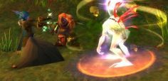

Les Terres de Kirin Tor
Tymlis
Points : 9
 Joué par :
[ Information masquée ]
Joué par :
[ Information masquée ]
Sexe : Homme
Race : Nain
Faction : Alliance
Formation : Voleur
Niveau : 60
Guilde : Alfirins (les)
Artisanat 1 : Ingenieur
Artisanat 2 : Mineur
Informations hrp : Tymlis est un ingénieur un peu farfelu, qui se veut de possèder tout les objets étranges, notamment tout ceux qui peuvent modifier son apparence.
Ère du Renouveau [5]
Lune de la Force
Décade du Panda
Décade du Gorille
Décade de l'Ours
Lune d'Agilité
Décade du Tigre
Décade du Singe
Décade du Faucon
Lune de l'Esprit [5]
Décade de la Chouette [1]
L'apprenti forgeron
Bonsoir. Je m'appelle Tymlis et ce soir je prends le temps de m'arreter un peu et de m'assoir. De me poser à ma table et de sortir quelques feuilles de papier pour écrire à la lueur de la bougie.
Tellement de choses se sont passées ces derniers temps que je n'ai pas eu le temps de regarder en arrière et de réfléchir à ce que je faisais. Maintenant je peux, alors je vais coucher cela sur papier.
Il me parait si loin le temps où je n'étais alors qu'un apprenti forgeron à Kharanos.
Le travail du cuivre c'était mon métier, la chaleur de la fournaise ma maison. Faire fondre, couler, transformer ces métaux bruts pour en fabriquer des armes, des armures c'était tout ce que je savais faire.
Un jour pourtant, le 4ème de la décade de la Chouette, tout a changé. Maitre Lhuan m'a demandé d'aller faire une course pour lui à Ironforge. Rien de trés extraordinaire, ce n'était pas la première fois que j'allais à la capitale, mais ce jour là pourtant il y regnait une atmosphère beaucoup plus fiévreuse qu'à l'habitude.
Trés rapidement je compris qu'il se passait quelque chose, des hommes et des femmes, des nains, des elfes, des gnomes et des humains étaient tous là vétus de leurs tenus de combat...
Etonné, je continuait quand même mon chemin vers le Hall des Explorateurs, en passant par le quartier militaire. Et là je fus rapidement accosté par deux nains d'environ mon age qui m'expliquèrent la cause de toute cette agitation. Plusieurs camps, plusieurs villes des environs avaient subis des attaques.
Par qui? ils furent incapable de me le dire mais me firent comprendre qu'ils venaient de s'engager dans la garde du Roi Magni pour justement recevoir une formation militaire qui leur permettrait de se défendre en cas de problème.
Ils furent rapidement rejoint par un dénommé Murgond, apparemment un haut gradé de leur organisation qui essaya de m'embrigader dans ca petite armée. Un personnage haut en couleurs, un bon vivant, qui m'offrit à boire, peut-être pensait-il que l'alcool m'obscurcirait les idées et que j'allais signer dans son histoire mais oh que non c'était mal me connaitre.
Je pris congé de ces gens pour aller voir finalement Stormpike qui me mit au courant plus précisément des problèmes...
Ma tête n'en pouvait plus... Dark Iron... Kobolds... Blackrock... Mosshide... tant de groupes qui minaient les défenses des Royaumes de l'Est, infestant chaque région, campant au nez et à la barbe des habitants, à peine à quelque distance des villes.
Et le pire... la jadis grande Cité de Gnomergan, cité des gnomes, cité des merveilles technologiques est désormais aux mains de renégats lépreux !
Je pris ma décision rapidement, fit mon sac, y enfournant le strict necessaire (pioche, marteau, nourriture).
De retour à Kharanos avec ces pauvres nouvelles j'en alertai maitre Luhan en lui annoncant que je partais pour le Loch Modan.

Décade de la Baleine [2]
En route vers les Wetlands
Ma rencontre avec JyssinaEt me voila parti sur les routes, traversant Dun Morogh, passant à coté du site de Gol'Bolar infesté de Troggs, continuant vers le Loch Modan, évitant les Dark Iron.
Rapidement, en quelques semaines j'avais plus voyagé que depuis ma naissance, passant d'une région à l'autre. Laissant les arides plaines des Westfalls pour la plus paisible foret d'Elwynn
... Pas si paisible, même ici j'ai du faire face à des Défias. Et cela m'horrifia encore plus. Savoir que des betes affreuses comme des Troggs, des Murlocs ou des Kobolds infestent la région est une chose. Mais savoir que des humains ou des nains ont succombés à ce mal insidieux avait de quoi me donner des sueurs froides.
Je dormais peu, nuit et jour je sillonais les routes. Après Gol'Bolar et Iron Band je me suis décidé à aller aider mes confrères du site de Welgar dans les Wetlands.

Toute cette période est assez confuse, je me souviens courir dans tout les coins, allez d'un endroit à l'autre, aider des confrères nains...
Mais la chose étrange qui m'est arrivée c'est ma rencontre avec la petite Jyssina.
Jyss est une toute petite gnomette assez sympathique, trés bavarde que j'avais rencontré une première fois au Loch Modan.
Quelques temps plus tard je la recroise aux Westfalls
Puis la voila qui ramasse des fleurs à Duskwood.
Toute petite, ah ben c'est une gnome après tout, les cheveux saumons (attention elle y tiens !), Jyss parle tout le temps, ponctue ses phrases de "Oh que oui que oui", "Oh que non que non parce que non". Malgré tout ses talents magiques me furent d'un grand secours à plusieurs reprises.
C'est une petite téméraire qui n'as peur de rien, elle part souvent seule dans des régions dangereuses pour ramasser des plantes pour sa maitresse, une dénommée Dame Amélie, que j'ai croisé par hasard un jour à Stormwind.
Une belle grande femme, une mage elle aussi, je ne l'ai pas vue longtemps mais elle m'avait l'air un peu bizarre comme femme... m'enfin.
Décade du Lapin [2]
Liki, première rencontre
Descente en prison et nouvelles connaissances
Depuis le jour où j'ai rencontré Jyss pour la première fois il semble que le hasard me l'ai ensuite toujours fourrée dans les pates.
Je ne pouvais plus aller quelque part sans entendre un "Monsieur le nain, Monsieur le nain".
Depuis ce jour donc j'ai passé une trés grande partie de mon temps en compagnie de Jyss, le moins qu'on puisse dire c'est qu'elle n'a pas froid aux yeux.
Mais si je parle de Jyss, du temps que j'ai passé avec elle je ne peux passer sous silence ma première rencontre avec Liki, une autre demoiselle avec qui j'ai passé beaucoup de temps.
Actuellement je ne vois plus beaucoup Jyss, les circonstances dans lesquelles sont arrivés l'événement sont assez douloureuses à raconter, je vous en parlerai sans doute plus tard, réservons nous quelque temps pour l'instant, que je vous présente Likimeya.
A cette époque j'étais au Lakeshire, je venais d'aider une jeune fille à récupèrer une caisse au fond du lac et j'étais en train d'explorer une grotte un peu plus loin à la recherche d'un milicien bloqué.
Et c'est là que je rencontre une jeune druide elfe et un roublard, explorant le coin. Je me joins rapidement à eux et v'la t'y pas que le p'tit humain en profite pour disparaitre comme ca d'un coup !
Et qu'on le revoit plus, qu'on se retrouve à deux au fin fond de la grotte... Et que ca allait pas etre la joie pour sortir.
Finalement on croise une fougueuse paladine du nom de Lyliane avec qui on parvient à se frayer un chemin jusque la sortie.
Depuis ce jour je crois que Liki (j'en suis rapidement venu à l'appeller par son diminutif) est la personne avec qui j'ai passé le plus de temps dans mes pérégrinations

Trés rapidement Liki et moi découvrons que nous sommes tout les deux engagés pour régler quelques problèmes de sécurité dans la prison de Stormwind.
Mais l'endroit est mal frequénté, les prisonniers sont sortis de leurs cellules et ont pris possession de l'endroit.
Bien qu'ils ne puissent plus sortir, eh bien personne ne peut trop y entrer.
C'est pourquoi Liki fit appel à une elfe de ses amis, Kyriel, une druide métamorphe pour nous aider.
De mon coté j'ai fait la connaissance d'un chasseur elfe de grand talent, Thamiior, qui accepte de se joindre à nous pour descendre dans ces bas-fonds et couper la tête de cette rebellion (au sens propre comme au figuré).
En chemin, on apercoit , se baignant dans le canal de Stormwind, faisant fi de tout les dangers de crocilisques géants dont les rumeurs font état, nous voyons donc une jeune elfe en petite tenue qui prenait du bon temps...
La jeune demoiselle nous ayant entendu discuter, Tham et moi, décide de se joindre à nous, arguant que ses talents martiaux nous seront d'une grande aide.
Dubitatifs, on l'accepte malgré tout dans le groupe et je dois avouer que malgré la première impression plutot frivole que j'avais eu de la personne, elle manie son épée avec brio, nous permettant de nous frayer un chemin jusqu'au plus profond de la prison, coupant ainsi net la rebellion Defias.
Malheuresement, sur le chemin du retour, un petit groupe de prisonniers nous attaque par suprise, alors que nous pensions l'endroit sécurisé. Le combat fut rapide, ou tout du moins j'en ai peu de souvenirs. Quand je pu reprendre mes esprits et voir l'état de mes compagnons, ce fut pour découvrir le corps de cette guerrière gisant par terre...
Pauvre elle, je ne me souviens même pas de son nom. Paix à son âme.


Ère du Conflit [7]
Lune de la Force [3]
Décade du Panda [1]
Il va être temps de faire une pause...
De fil en aiguilles, des Wetlands à Dun Modr, de Dun Modr à Arathi, d'Arathi à Stromgarde puis de Stromgarde à Southshore mes aventures m'ont amenées à visiter de nombreux endroits.
Des criques de pirates isolées, des ruines d'anciens chateaux infestés de Defias ou d'Ogres, des terres enneigées peuplées de Yétis et même un dome de lueur violette appellée Dalaran.
A cette époque là je dois avouer que la vie d'aventurier commencait à me plaire et que le but premier pour lequel j'étais parti commencait à m'échapper... Bien sur je continuait de miner différents minerais lors de mes voyages mais... ceux ci commencaient à s'entasser dans mon coffre sans que je ne leur trouve d'utilité.
J'avais pris l'habitude de voyager léger, et de ne pas m'encombrer de plus d'une dague ou d'une épée. Lorsque j'étais encore artisan forgeron à Kharanos je me disais que toutes ces armures que je fabriquais étaient ce dont un guerrier avait besoin, mais maintenant je vois bien que tout cela est trop lourd... mieux vaut quelque chose de moins résistant mais dans lequels les mouvements sont plus libre. J'aimerait bien vous y voir vous à fuir devant une bande Murlocs empetré dans votre carcasse de plate !
Enfin bref, c'est suite à une reflexion de ce genre que je me suis arreté à Southshore pour y poser mon sac, sortir tout le matériel que j'y avais entreposé et commencé à réfléchir au moyen de faire quelque chose d'utile avec ca...
Et c'est grace à l'aide d'un gnome de passage qui m'initia à l'ingénieurie subtile de son peuple que je finis par délaisser complétement le chaleur de la forge et la puissance des marteaux frappant le fer au profit d'une table mal éclairée et de quelques fins outils pour mettre au point plusieurs petits appareils.
Cela me prit des jours, et des jours, et des jours... et quand je relevais enfin la tête c'était pour m'apercevoir que deux décades avaient passées et que mes amis devaient commencer à s'inquieter, vu que je n'avais donné aucun signe de vie !
Décade du Gorille
Décade de l'Ours [2]
Gnomeragan
Un certain Kohrin, et une certaine grotteMes quelques décades passées à travailler assiduement m'ont fait me rapprocher de la facon de penser des gnomes.
On voit la vie autrement quand on est si petit, on a tendance à tout vouloir miniaturiser. Les gnomes ont vraiment mis au point quelques petites merveilles de technologie.
C'est pourquoi quand Jyss est venue me trouver pour me parler de sa terre natale aux mains des gnomes lépreux je me suis bien vite proposé à l'aider.
Oh bien sur elle tourne ca à sa manière, expliquant que "oh que non que non", que c'est elle qui accompagne "monsieur le nain" et pas l'inverse mais je sais bien ce qu'il en est réellement !
Lors de notre descente dans les profondeurs de Gnomeragan nous avons fait la rencontre d'un drole de type. Un certain Jorian, il avait pas l'air trés aimable avec ses grosses épaulières mais finalement c't'un chic type, il nous as aidé durant un bon bout de chemin.
Je n'ai juste pas vraiment apprécié sa remarque à propos d'un possible lien de parenté ancestral entre les Troggs et les nains...
Enfin bon, nous accompagnait un mage, Lamnane, qui partage la même passion que moi pour les dispositifs en tout genre.
D'ailleurs, il avait de chouettes lunettes...
Enfin, il faut savoir que tout Gnomeragan est aux mains des Troggs et des gnomes renégats... Tout? Non car environ à mi chemin vers le dernier sous-sol se trouve une zone d'irréductibles petits gnomes qui continuent de protéger leur demeure.
Ce sont de braves gaillards, toujours prêts à faire la fete, à danser et à chanter. Faut dire qu'après avoir traversé les premiers étages, on était bien content de trouver un peu de calme ici.
Il ne manquait plus qu'un banquet et tout aurait été parfait...
Nous étions ce jour là à Booty Bay (un coin paradisiaque si vous voulez mon avis ! La mer est limpide, les gobelins plutot enclins à discuter technique et leur alcool n'est pas désagréable) quand Liki me dis "Tiens, j'ai un ami qui est dans le coin, je vais te le présenter je suis sur que vous vous entendrez bien. Il s'appelle Kohrin".
Haha, ce n'était pas peu dire. L'homme est un sacré personnage, un brin kamikaze mais sympathique... mais surtout ! C'est un sacré dragueur...
Liki, dont les seulles relations avec les hommes dont j'avais pu etre témoin se limitaient a envoyer balader avec beaucoup de désinvolture tout les paladins qui passaient, cette fois ci je la découvrait sourire timidement aux avances du charmeur.
He ben, quelle surprise.
Enfin, cela ne nous empecha pas d'aller récolter des perles au fond de l'eau, évitant encore une fois une bande de Murlocs avant de partir en quête d'une grotte où nous avions tout trois des papiers à retrouver.
Je me permets ici de laisser une note au voyageur qui irait un jour à Stranglethorne. Prenez garde, sur la route se trouve un gorille dont le jeu favori est d'attraper les voyageurs au moment où il passe. Attention d'ailleurs, il n'attaque pas n'importe qui : on dirait qu'il se focalise sur les nains... roux... sur moi quoi...
Finalement, à l'entrée de la grotte Liki croise une amie à elle, une dénommée Arkady. S'ensuit une discussion à laquelle je n'ai rien compris durant toute l'exploration de la grotte. Arkady semblait plus encleint à insulter Kohrin qu'à faire attention à sa propre sécurité, elle avait comme qui dirait une dent contre Kohrin, bien que je n'ai pas compris pourquoi.
Je dois bien avouer que cela en devenait ridicule et j'ai tenté plusieurs fois de la calmer, mais Liki me disait que ce n'était pas grave, de ne pas m'en meler, alors je n'ai pas insisté (mais il n'empeche que ca n'aurait tenu qu'à moi, je l'aurais bien laissée seule au fond de cette grotte celle là !)
On aurait cru qu'elle était jalouse de Kohrin, et ce, jusqu'au bout des ongles... mais bien sur cela n'a aucun sens...


Lune d'Agilité [4]
Décade du Tigre [3]
Retrouvons l'expédition
Petite fete pour la paix à Booty Bay
Je suis ensuite retourné aux Badlands, on m'avait encore parlé d'une expédition de confrères nains perdus dans cette région, ainsi que d'un complexe nommé Uldaman. L'endroit ne me disait rien qui vaille.
Je commencais donc par aller sur les lieux à la recherche de l'explorateur dont on m'avait donné le nom. Après quelques heures de recherche je mis enfin la main dessus mais le pauvre... la mort l'avait trouvé avant moi. "Sans doute la chaleur" me dis-je avant de remarquer le camp de mosntres à coté qui finalement devaient etre la cause...
"Vous cherchez quelque chose?" m'interpella une voix derrière moi.
C'était un mage, humain, avec de sympathiques lunettes lui aussi. Il semblait etre arrivé à la même conclusion que moi et envisageait aussi de venger le pauvre nain.
Nous commencames donc à fouiller le camp à la recherche d'indices, mais rapidement les gnolls nous remarquerent et nous n'en sortimes vivant que grace à la célérité de nos jambes !
C'est alors que le mage, Bah de son nom, eut une idée étrange. Il s'approcha d'un gigantesque Tauren qui était non loin, lui parla par geste pendant quelques minutes et... je ne sais pas comment il fit mais celui ci nous aida a nous frayer un chemin dans le camp !
Vive le langage des signes !
Enfin, la nouvelle que j'appris en lisant les dernières notes de mon confrère n'étaient pas trés optimistes... il me fallait m'enfoncer dans Uldaman pour retrouver trois autres mineurs... J'appelai donc Jyss, Kohrin et Likimeya à la rescousse pour tenter une descente (encore une fois) au plus profond d'un endroit mal famé.
Malheuresement Bah du nous quitter. Tham accepta de venir nous aider, et le temps qu'il arrive Koh et moi sommes allé un peu visiter le coin. Bien mal nous en pris !
Les falaises ici sont trés escarpés et un pas de travers peut vous entrainer tout en bas; Koh ne du d'ailleurs sa survie qu'aux reflexes ultra-rapides de son cheval sans quoi...
Moi par contre je n'eut pas autant de chance... Enfin, si un peu, je suis tombé sur un tas de bois, ce qui amorti quelque peu ma chute mais... tout s'écroula par dessus moi et je ne pouvais plus sortir... Obligé de me téléporter à Booty Bay pour revenir ! Pff !
Finalement, le temps de nous remettre de nos émotions, Tham arriva et on se mit en route ensemble.
A l'intérieur par contre, ce n'était pas du tout comme je me l'imaginais. Je pensais, avec ma chance habituelle, avoir à combattre pour chaque ps franchi des monstres sorti de on ne sait où...
Et bien non... Peut-etre qu'effectivement c'était comme cela avant mais là on aurait dit qu'une armée était passée avant nous... des cadavres partout...
Je compris rapidement que je n'avais pas vraiment tort. Effectivement, quelques pas plus loin une dizaine de personnes (des humains, des nains, des trolls, des taurens...) se livraient à une mélée sans merci... Eh bien pour une fois la tache me sera facilitée !
C'est ainsi qu'on arriva enfin à Olaf et ses compagnons sans trop de difficultés, avant de ressortir au grand air.
Les Nuits Eternelles au monastère
Ce jour là, je ne l'appris que beaucoup plus tard, se tenait la 3ème marche pour la Paix, habituellement une marche rassemblant des dizaines de personnes de tout age et de toutes races, vetues de blanc, marchant à travers tout Azeroth, de Stormwind à la Croisée de Chemins par exemple.
Ce jour là c'était un concours de pêche, organisé par les deux factions, avec traduction simultanée qui avait lieu à Booty Bay.
Bien sur j'arrivais à la fin tiens avec ma chance légendaire, mais je dois dire que finalement... je suis arrivé au bon moment, juste pour entendre dire "Allez, tout le monde à l'auberge" (et la même chose en Orc)
Oh quelle bonne idée !
Et je dois dire que ce jour là l'ambiance à la taverne était le plus animé que je n'ai jamais vu.
J'ai dansé tour à tour avec des Taurens, des Elfes et des Humaines, toutes habillées de blanc
Oh bien sur je ne regrette que deux choses... (Outre le fait d'avoir raté le début du concours et n'avoir qu'une robe violette à me mettre pour l'occasion).
C'est que Kohrin n'ai pas pu venir, vraiment avec son look du moment, multicolore, il aurait fait sensation hehe.
Et la deuxième chose c'est le peu de résistance à l'alcool qu'ont les elfes. A peine après quelques chopines que leur esprit s'embrume déjà et qu'ils ne sont plus maitres de leurs réactions.
Bien évidemment cette si belle soirée s'est terminée par une bagarre entre deux de ces oreilles pointus.
Pfff
Si le coeur vous en dit, vous pouvez télécharger quelques vidéos musicales de cette soirée ici (pensez à bien monter le son de vos enceintes)
- Asereje
- Ruda 1
- Ruda 2
- Ruda 3
- Ruda 4
- Don't Stop
- Get outta my head

Les Nuits Eternelles...
Voila le nom de la guilde de laquelle font parti Thamiior et Likimeya.
Qu'est-ce que cela peut bien vouloir dire, je n'en sais rien, j'avoue ne jamais leur avoir demandé. Et puis il est trop tard maintenant, ils ont tout les deux quittés l'organisation à vrai dire.
Je pense que je n'en saurais jamais rien.
Enfin, je peut y réfléchir... leur tabard représente un ciel criblé d'éclairs et puis... tout les membres que j'ai rencontrés furent des elfes.
Tenez par exemple, ce jour là, au monastère Ecarlate...
Un prêtre elfe du nom de Derwen et un archer dont le nom m'échappe (puisse-t'il ne pas m'en tenir rigueur) portaient eux aussi le tabard et les longues oreilles si caracatéristiques de cette guilde.
J'ai accompagné Liki et Tham en ce lieu. Je dois dire que l'atmosphère du monastère est étrange, tout y est teinté d'ambiguité. L'architecture est agréable, les couloirs spacieux, les patios laissent voir le soleil et les vitraux sont magnifiques...
Les habitants ne sont pas non plus quelque espèce maléfique comme des Troggs, des Kobolds ou des Gnolls.
Non.
Ce sont des humains, comme vous et moi (enfin, un peu plus comme vous que comme moi...). Ils ne prechent pas non plus quelque forme d'ancienne divinité révant d'étendre le pouvoir maléfique de celle-ci sur le monde. Non plus.
Et c'est bien là le pire.
Ils sont convaincus d'oeuvrer pour le bien de l'humanité et "éradiquant" de la surface d'Azeroth tout ceux qui s'opposent à leur vision du "bien".
Leur discours en est tellement futile et peu évolué qu'il en deviendrait ridicule et amusant... si ce n'était pour l'imposante masse de force armée dont ils peuvent disposer...
Le monastère n'est qu'un de leurs multiples avant poste. Je sais qu'ils sont aussi présent dans les Plaguelands, luttant contre le Fléau mais aussi contre toute personne qui n'arbore pas leur flamboyant tabard rouge...
Finalement... Ce n'est pas de la Horde que les gens devraient avoir peur, mais de ces pseudo-justiciers à la pensée trop étroite.
Décade du Singe [1]
Petite confusion...
Si vous êtes déjà allé dans les Hautes Terres d'Arathi vous avez sans doute entendu parler de cette histoire, celle de Trélane. Etrange histoire vous en conviendrez.
Le plus étrange est qu'elle pique la curiosité de tout les aventuriers en quete de sensation qui passent par ici, qu'ils soient humains, nains, orcs, taurens ou elfe.
Si je vous raconte cela c'est que ce jour là nous sommes tombés nez à nez avec une troupe de Hordeux plutot pacifiques qui semblait (encore une fois, le langage des signes ne permet jamais de vraiment etre sur de comprendre les intentions de l'autre) vouloir investir la tour, celle-ci étant gardée par un grosse troupe d'Ogres qui eux n'avaient pas l'air trés content de nous trouver là.
Tentant de nous faire comprendre autant que possible, on reussi a planifier une attaque frontale. C'était l'occasion revée pour tester ma dernière création (j'y avais passé une bonne partie de la nuit précédente !) : un rayon censé réduire ma cible à une taille beaucoup moins imposante.
Au moment même où les Orcs commencent à charger je presse le bouton de mon appareil que j'avais braqué sur le plus proche des Ogres...
Et là en un éclair de lumière bleue je vois le sol se rapprocher à grande vitesse ! Il ne m'a pas fallu longtemps pour comprendre que quelque chose avait mal fonctionné (le pré-discombulateur était mal indexé peut-être?) mais qu'elle ne fut pas ma surprise en regardant autour de moi de voir Koh, Liki, Tham, Jyss et tout les orcs et Taurens a la même taille que moi... s'égaillant dans toutes les directions pendant que les Ogres les pourchassaient, les écrasaient...
En quelques minutes plus un seul d'entre nous ne tenait debout...
Les Ogres avaient gagnés le combat presque avant même qu'il ne commence...
Décade du Faucon
Lune de l'Esprit
Décade de la Chouette
Décade de la Baleine
Décade du Lapin